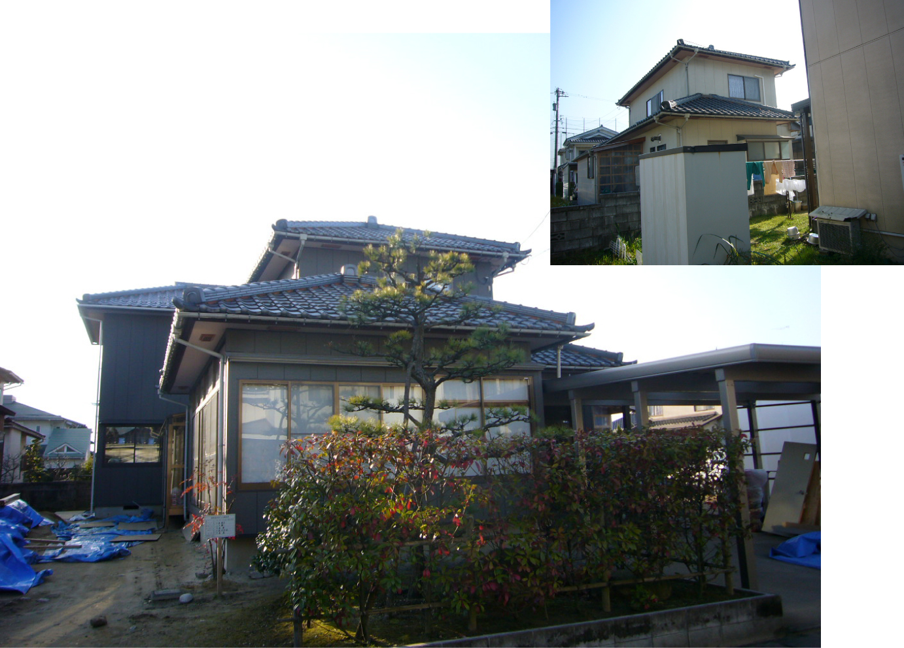

内島住宅の建築事業
和の心と匠の技で生まれ変わる伝統家屋古民家再生
内島住宅では伝統の和風建築による古民家の再生事業を大切にしています。
伝統工法による和風建築は、日本の気候や風土に最もよく合致するように進歩してきた、機能性と美、耐久力を兼ね備えた優れた建物です。 古民家再生事業では、一見古ぼけて見える民家を現代的感性で磨き上げ、最新の耐震補強を施し、良いものをよりよく、より美しく、より機能的に、より強く、新しく生まれ変わらせます。
譲れない拘り歓迎します。新築・増改築
代表の内島は、長年の間富山の住宅と向き合い、設計から施工管理、人材の育成に至るまで幅広い経験を積んでまいりました。
これらの経験から見つけた建築業界の無駄、現場の無駄、会社の無駄の原因を探り、徹底した業務の見直しによって、他社の追随を許さない坪単価と高い品質を両立させることに成功しました。
イベント情報
- イベント情報サンプルの文章が入ります。イベント情報サンプルの文章が入ります。
- イベント情報サンプルの文章が入ります。イベント情報サンプルの文章が入ります。
- イベント情報サンプルの文章が入ります。イベント情報サンプルの文章が入ります。
- イベント情報サンプルの文章が入ります。イベント情報サンプルの文章が入ります。
貴方の住宅の主治医となる
こんな方はご相談下さい
- この前の業者は嫌だ
- 希望通りにならない
- 無理だと言われた
- 家には譲れないこだわりがある
- 値段が折り合わない
- とにかく品質が大事
- 納得できなかった・満足できそうにない
小さな改築・リフォームから新築まで、一級建築士が承ります
Ｔ邸・再生工事（リフォーム）
古い、劣化した外装や建具を最新の材料に改修、高気密・高断熱を実装すると共に、建物構造材の補修も行っています。
あらゆる部分が風化し、「建替えようか」と思いたくなる施工前の状態ですが、ご覧の通りです。
なお、このような腐食した外壁を長期間放置すると外壁から雨水が浸入し、カビや害虫の繁殖による健康被害、また、構造材の腐敗による強度低下など、場合によっては命に関わる重大な問題が起こります。
茶の間や居間などの内装も改修。古い内装を、構造材の美を生かした、美しく清潔感のある空間に仕上げています。
今流行の仕上げも、いずれは施工前写真の様に、必ず時代遅れになって行きます。 「木の飾らない美しさ」を見直してみませんか？
Ｙ邸・増築・改修工事
増築部分の天井構造を見上げた写真です。 巨大な部材が隙間無く、複雑に組み合わせられています。
この不釣り合いにも見える巨大な構造材によって、家全体の開放性を高め、優れた通気性と柔軟なレイアウトを可能にします。
生コン打設前の床下の様子です。 鉄筋が整然と並んでいます。 鉄筋の下に見えるビニールは、床下からの湿気の上昇を防止します。

仕上がりの内装です。 明るく、現代的で、飽きの来ない美しい室内となります。 和風住宅なんて古い、と、いまだに時々耳にしますが、いかがですか？
外観も、落ち着いた色彩の建物に仕上がっています。
Ｓ邸・住宅新築
白い外壁と木の色合いを生かしながら、飾りすぎず、飽きの来ない外観を目指しました。
内部はお見せ出来ませんが、実際に住むお客様のご要望を最大限考慮し、建築士ならではの工夫をたくさん取り入れています。
Ｏ邸・水まわり再生・リフォーム
古い内壁をやり替え、風化した構造材を磨き上げ、新築さながらの清潔感ある洗面所に再生しました。
一見すると、そのうち建て替えかなと思うような古ぼけた室内ですが、少し手入れしてやれば、見違えるように美しく生まれ変わります。
キッチン、洗面所、バスルームなどはカビや汚れが溜まりやすく、ご相談が多い改修箇所の一つです。
Ｓ邸・古民家再生
伝統的な造りの農家古民家です。
古くなり、痛みきっていた外壁や外装を補修・改修し、内装や設備も最新のものに一新しています。
元々換気・通気性に優れた伝統建築です。断熱性と防犯の意味を兼ねた建具に入れ替え、また、外壁の断熱構造を見直してやることで、もう一段上の住みやすさを実現できます。
元々あった構造材に、補修が必要な部分は新材との入れ替えや、筋交の追加などを行っています。元々の構造材と新材が入り混じり、不思議な光景ですが、こんなことが出来るのが和風建築の強みです。
写真中央右上に見える銀色の小さな四角いプレートは、耐震補強の為のものです。 構造材同士のかっ着性を高め、フレームの変形を防ぐ、新しい耐震仕様です。 施工中は是非、現場にお越しください。また、当社にご相談をご検討の方も、お問い合わせください。
家創りで失敗しない為に -内島住宅株式会社が考える、理想の家とは-
木陰のような家
換気とは、窓の大きさの事ではありません。例えば、窓やドアを開放しているのに室温がどうしても下がらず、冷房に頼るほか無い住宅が残念ながら沢山あります。人の体も電化製品も部屋の空気で自分を冷やす仕組みになっているのに、熱の流れや風邪の仕組みを計算していな為です。
内島住宅の家屋は全て、緻密に風が流れる経路を計算し家中どこにいても、まるで木陰にいるかのような自然で爽やかな風を感じられるよう設計されています。
ですから冷房は必要最低限の補助で済むようになります。また、家屋は呼吸します。よどみがちな空気には湿気が溜まりやすく、そよ風の吹かない家はいずれ、なんとなく陰湿でジメジメした部屋になりがちです。 湿ったソファー、畳、カーペット等は、カビや雑菌やダニ達の格好の住処となり、ご家族の健康に害を与えかねません。
理想の家は、木陰にいるようでなければなりません
2階が涼しく、1階が暖かい家
住宅の屋根裏は太陽に熱されて床下は常に日陰である為、断熱が不十分である家では、夏場の2階は40℃近くまで気温が上昇し、逆に冬場はどんなに暖房しても足元が冷え、痛み、痺れの悩みの種になってしまう事になります。
こういう家では何をやっても無駄で、直すのに一旦壁、天井を壊すしかありません。
ですから、内島住宅では新築の時点で、その時考えうる最良の材料で誠実で正確な仕事をする職人だけを使い、まるで宇宙船のように居住空間を断熱・密封する広報を推奨します。
但し、高断熱・高気密を謳う材料・工法はよくみかけますが、密封性は一切の妥協を排除しなければほとんど意味が無い為、材料が良いだけでは駄目なのです。窓を開ければ木陰の涼しさ、窓を閉めれば宇宙船、このようなことを文字通り出来る職人はそう多くいません。
それを実現するのは、つまり最後は人の質です
年月に強い家
2つの視点があります。1つ目はもちろんその耐久性です。どんな建築物でも、年月を経るに従って廊下は進みその強度は低下します。それでも地震などの災害や風雪に耐え続ける為に必要なのは、まずもともとが頑丈な事、次に時間が経過しても頑丈さを維持出来る事です。
前者については、どんな工法を使っても同時では言うほどには変わりません。必要以上の強度設計は普通しないからです。
後者については、在来工法の方が若干有利です。在来工法では解体、補修、補強等が簡単なので、部材の長時間の耐久性にもデーターと経験が蓄積されています。2つ目にはあなたとご家族の人生の歴史の進み具合に合わせて家の機能を簡単に変えていける柔軟性です。
このような観点においては在来工法に匹敵する工法は殆どありません。多くの外来工法は窓を大きくする事すら困難なのです。
理想の家は、ご家族の人生と共に姿を変え続けます
頑固者が施主の家
頑固と言ってもへそ曲がりの意味ではありません。
自分の家創りについて、その理想像や必要な機能を良く知っている人は、価格や話術に騙されないし譲れない所は絶対に譲りません。
こういうお客様は、我々建築業者からは「扱いにくい人・難しい人」と見られがちです。ですが迷ったり悩んだりしておられる方はどうかおおいに勉強して、営業マンが逃げ出すほどの頑固なこだわりの人になってください。
家を買うのはそれからでも遅くはありません。例えば良し悪しがちゃんと分かる買い物をしている時は100円でも高いものは高いし、100万でも安いものは安いとはっきり分かるはずです。
同じことは2000万円でも、3000万円の買い物にも成り立ちます。いえ、成り立たせねばなりません。
「まあいいか！」で済むほど、安い買い物ではないはずです